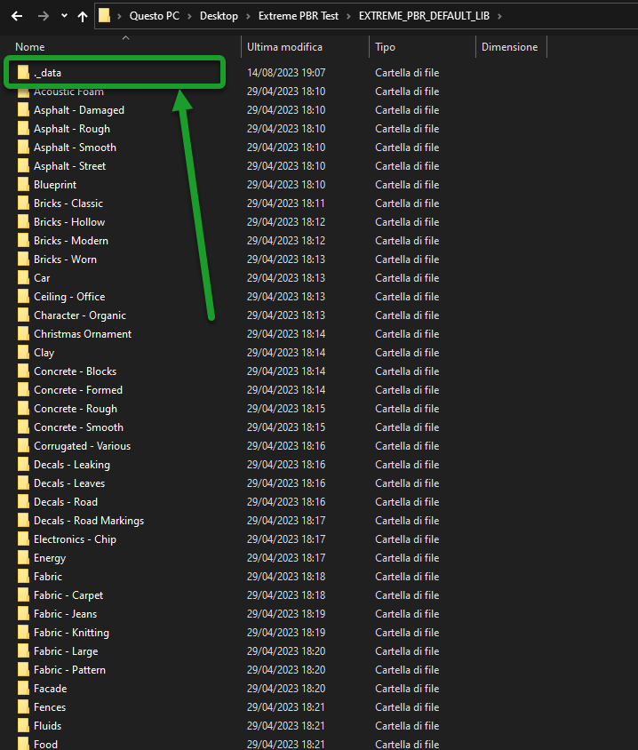

Troubleshooting
In this section there are some tips to solve known problems. This section will be updated over time based on the major problems encountered by users. Problems related to Extreme PBR bugs are usually solved. Here are some of the most common problems. Question and answer
I do not receive mail from BlenderMarket
Make sure you consented to receive emails from creators in your Blender Market account preferences: https://blendermarket.com/account/privacy-center/consents
Find Options Menu
To go to the Extreme PBR options, you have to go to the addon preferences. But to make this process easier there is a button directly in the Extreme PBR interface:

Pink Materials
It may happen that there are files that referred to the material that have been moved, so the material no longer has a reference image.
Here’s how to do it: Unrecognized Material and Find Lost Images
Black Materials
In this case there may be a problem when creating a file in a newer version of Blender, and then after saving the project it is opened in a previous version of Blender.
Sometimes Blender updates its nodes, so it may be that the nodes are no longer retro compatible with the previous version. To solve this I have provided a function that tries to replace the “Unknown” nodes
You can find it in the Extreme PBR Options menu in this paragraph: Adjust All Material Node Tree
Moving libraries to another computer
To move the libraries to another computer, just copy the “EXTREME_PBR_DEFAULT_LIB” and “EXTREME_PBR_USER_LIB” folders
If once connected the libraries from the “Libraries” menu in Extreme PBR preferences the addon does not work, it could be that in the folders mentioned above, the “._data” folders are missing, so make sure they are inside each library.
{kind=link}
To Show the hidden folders in Windows:
Open File Explorer from the application bar.
Select View > Options > Modify folder and search options.
Select the View tab and in Advanced settings, select Show hidden folders, files and drives and OK.
To Show the hidden folders in Mac:
Access the folder where you think there are hidden files.
Step 2: Press the keys “Command + Shift + (.)”
Or:
In Finder, open up your Macintosh HD folder
Press Command+Shift+Dot
Your hidden files will become visible. Repeat step 2 to hide them again!
To Show the hidden folders in Linux:
Press the menu button in the top-right corner of the window and select Show Hidden Files, or press Ctrl+H.
Why if I export the project to another computer I can no longer see the materials?
This is quite normal, by default blender does not package images in .blend files, to do this you have to go to
File > External Data > Automatically Pack Resources
Then save the project, and finally you can move it to any other computer. It will contain all the images you used.
Pay attention to this, because your .blend files after these operations will contain all the image files present in your project is present an image of 100MB (For example) your .blend file will become 100MB more.

I have bought a version in which the libraries were downloaded, now I can no longer find this function.
Don’t worry, now you still have the function, you just have to go to the addon options and click on I have an Extreme Addon account here is how to do it: I Have an Account on Extreme Addons
Note
From the version of Extreme PBR Nexus 4.1.100 we decided to insert the possibility to download the libraries directly from the MarketPlace from which you purchased the product. The files are in exapack format and the addon has an installer that allows you to install the libraries in a simple way described here: Install The library